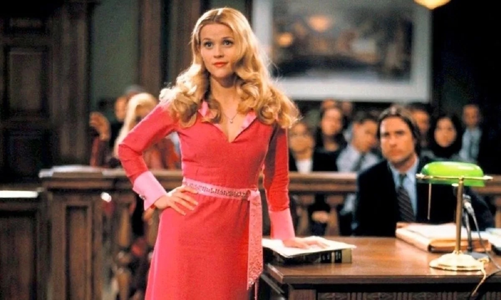
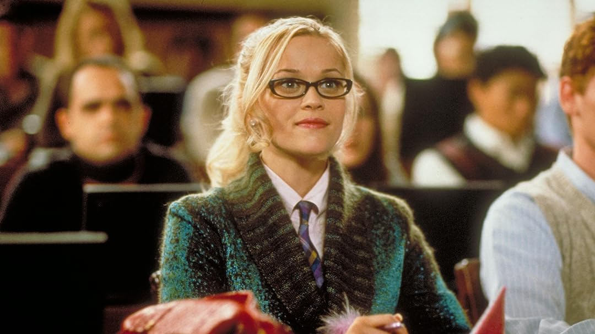
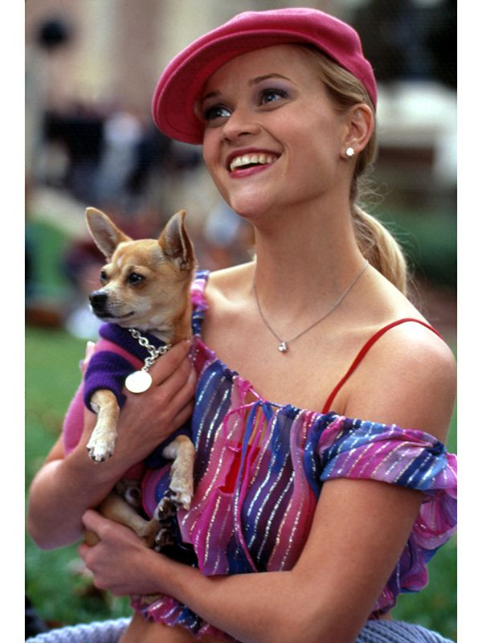

About
Legally Blonde is a 2001 American romantic comedy film directed by Robert Luketic (in his feature directorial debut) and written by Karen McCullah Lutz and Kirsten Smith, based on Amanda Brown's 2001 novel of the same name. It stars Reese Witherspoon, Luke Wilson, Selma Blair, Matthew Davis, Victor Garber, and Jennifer Coolidge. The story follows Elle Woods (Witherspoon), a sorority girl who attempts to win back her ex-boyfriend Warner Huntington III (Davis) by getting a Juris Doctor degree at Harvard Law School, and in the process, overcomes stereotypes against blondes and triumphs as a successful lawyer.
The outline of Legally Blonde originated from Brown's experiences as a blonde going to Stanford Law School while being obsessed with fashion and beauty, reading Elle magazine, and frequently clashing with the personalities of her peers.[4] In 2000, Brown met producer Marc Platt, who helped her develop her manuscript into a novel. Platt brought in screenwriters McCullah Lutz and Smith to adapt the book into a motion picture. The project caught the attention of director Luketic, an Australian newcomer who came to Hollywood on the success of his quirky debut short film Titsiana Booberini. "I had been reading scripts for two years, not finding anything I could put my own personal mark on, until Legally Blonde came around," Luketic said.
Plot
In California, fashion merchandising student and sorority girl Elle Woods is taken to a local restaurant by her boyfriend, Warner Huntington III. She expects a proposal, but he breaks up with her instead. Intending to go to Harvard Law School and become a successful senator, he believes that Elle is not "serious" enough for that kind of life. Elle believes she can win Warner back if she shows herself capable of achieving the same things. After months of studying, Elle scores a 179 on the Law School Admission Test and, combined with her 4.0 GPA, is accepted to Harvard Law School. At Harvard, Elle finds her SoCal personality is a complete contrast to her East Coast classmates, who frequently distrust her. Upon encountering Warner, Elle discovers he is engaged to his old girlfriend, Vivian Kensington, who considers Elle a fool. Later, Elle tells Warner of her intentions to apply for one of her professor's internships, only for him to say she is not intelligent enough. Realizing that Warner will never take her back or take her seriously, Elle finds motivation to prove herself by working hard and demonstrating her understanding of the subject.
The following semester, Professor Callahan, the school's most respected teacher, takes on some first-year interns to help with a high-profile case. Among those chosen are Elle, Warner, and Vivian. Callahan is defending a prominent fitness instructor named Brooke Windham, one of Elle's role models. Accused of murdering her husband, Brooke is unwilling to produce her alibi, and she later reveals to Elle she was secretly having liposuction during the murder, which Elle promises not to disclose. Vivian gains a new respect for Elle and reveals Warner got into Harvard with his father's help. Emmett Richmond, Callahan's junior partner, has also taken notice of her potential. One night, Callahan tries seducing Elle, who now believes that is why she got the internship. Devastated, she quits and nearly returns home to California, telling Emmett what happened. When he tells Brooke, she replaces Callahan with Elle under Emmett's guidance. Elle's classmate David Kidney cites a Massachusetts Supreme Court ruling that law students may represent clients if they do so under the supervision of a licensed attorney.
While cross-examining Brooke's stepdaughter, Chutney, Elle eventually catches her in a lie when she discovers significant inconsistencies in her story: Chutney testified she was home during her father's murder but did not hear the gunshot because she was in the shower after getting her hair permed that morning. Elle says washing permed hair within the first 24 hours would deactivate the ammonium thioglycolate, pointing out Chutney's curls are still intact. A distraught Chutney admits her culpability in inadvertently killing her father as she really intended to kill Brooke since she hated her father marrying someone the same age as her. After the trial, Chutney is sent to jail, and Warner asks Elle to take him back as she has proven herself. She rejects him, realizing he is shallow and a "complete bonehead". However, she and Vivian become best friends, especially after Vivian dumps Warner. Elle gives the graduation speech two years later, while Warner graduates with no honors, no job offers, and no girlfriend. Emmett has started his own law firm, with plans to propose to Elle later that night.
Legacy
More than twenty years later, the film continues to inspire generations of filmgoers, many of them women who went on to become prospective law students. "At least once a week, I have a woman come up to me and say, 'I went to law school because of Legally Blonde,'" Witherspoon said. "It's incredible...You can be unapologetically feminine but also smart and driven." "When I saw the movie I just felt it gave me like a real surge of motivation because I really identified with her," Layla Summers, a family law attorney, told Spectrum News. "I think the movie is still very relevant," she added. "Just being a girl and being a woman, the odds are stacked against you still...When I watch the movie now I feel like I'm part of a great club of powerful professional women, like a sorority."
"When I got to law school, on the toughest days, I would pop in the movie and get a good laugh," Shalyn Smith, a California law student and sorority president, said in an interview with People magazine. "Elle embodies fighting for what is right, staying true to yourself, and defeating the odds. It's crazy that one movie can do that, you know?" Entertainment reporter Lucy Ford revealed to Witherspoon during an interview in 2018 that she had written her college dissertation on the film and presented her a pink-ribbon bound copy.